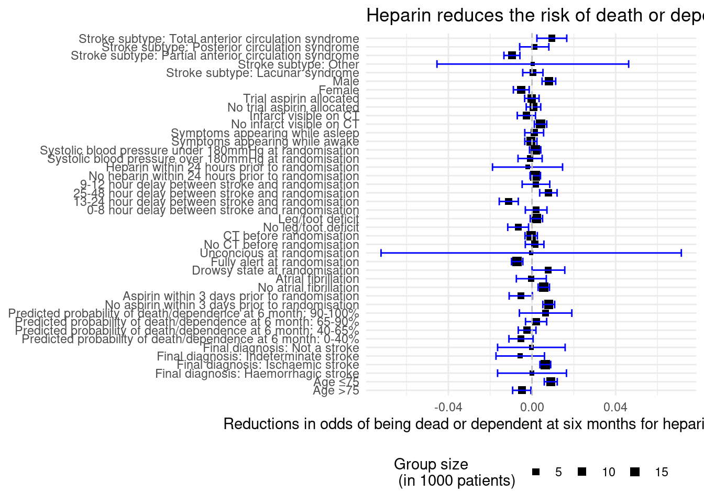

Group 29: Helena Møller, Emma Christensen, Frederik Holmstrup, Casper Harreby & Laura Christiansen
Data Analysis
We want to investigate the apparent beneficial effect of the treatment by aspirin and heparin, divided into the different subgroups of the data. We will do that with inspiration from figure 2 in the original paper.
The CI of the different treatments looking at different subgroups in the data. Pay note that some of the groups are represented by a 95% CI and others has a 99% CI. The 99% CI is used for all the subgroups, while the 95% CI is for the main group. Size of square refer to the amount of available information (the sample size).
Loading libraries
library("tidyverse")
Warning: package 'tidyverse' was built under R version 4.2.3
Warning: package 'ggplot2' was built under R version 4.2.3
Warning: package 'tibble' was built under R version 4.2.3
Warning: package 'tidyr' was built under R version 4.2.3
Warning: package 'readr' was built under R version 4.2.3
Warning: package 'purrr' was built under R version 4.2.3
Warning: package 'dplyr' was built under R version 4.2.3
Warning: package 'stringr' was built under R version 4.2.3
Warning: package 'forcats' was built under R version 4.2.3
Warning: package 'lubridate' was built under R version 4.2.3
── Attaching core tidyverse packages ──────────────────────── tidyverse 2.0.0 ──
✔ dplyr 1.1.4 ✔ readr 2.1.5
✔ forcats 1.0.0 ✔ stringr 1.5.1
✔ ggplot2 3.5.1 ✔ tibble 3.2.1
✔ lubridate 1.9.3 ✔ tidyr 1.3.1
✔ purrr 1.0.2
── Conflicts ────────────────────────────────────────── tidyverse_conflicts() ──
✖ dplyr::filter() masks stats::filter()
✖ dplyr::lag() masks stats::lag()
ℹ Use the conflicted package (<http://conflicted.r-lib.org/>) to force all conflicts to become errors
library("here")
Warning: package 'here' was built under R version 4.2.3
here() starts at C:/Users/frede/OneDrive/Dokumenter/2 DTU master/1 Semester/22160 R for Bio Data Science/group_29_project
Loading data
here()
[1] "C:/Users/frede/OneDrive/Dokumenter/2 DTU master/1 Semester/22160 R for Bio Data Science/group_29_project"
data <-read_tsv(here("data/03_dat_aug.tsv"))
Rows: 19435 Columns: 98
── Column specification ────────────────────────────────────────────────────────
Delimiter: "\t"
chr (69): RCONSC, SEX, RSLEEP, RATRIAL, RCT, RVISINF, RHEP24, RASP3, RDEF1, ...
dbl (28): USUBJID, RDELAY, AGE, RSBP, RYEAR, HOURLOCAL, MINLOCAL, DAYLOCAL, ...
lgl (1): DDEAD
ℹ Use `spec()` to retrieve the full column specification for this data.
ℹ Specify the column types or set `show_col_types = FALSE` to quiet this message.
Heparin vs. Control Subgroup Analysis
Data augmentation - Creating the desired subgroups
full_labels_heparin <-c("AGE_group_>75"="Age >75", "AGE_group_≤75"="Age ≤75","DDIAG_DDIAGHA"="Final diagnosis: Haemorrhagic stroke","DDIAG_DDIAGISC"="Final diagnosis: Ischaemic stroke","DDIAG_DDIAGUN"="Final diagnosis: Indeterminate stroke","DDIAG_DNOSTRK"="Final diagnosis: Not a stroke","EXPDD_group_0-40%"="Predicted probability of death/dependence at 6 month: 0-40%","EXPDD_group_40-65%"="Predicted probability of death/dependence at 6 month: 40-65%","EXPDD_group_65-90%"="Predicted probability of death/dependence at 6 month: 65-90%","EXPDD_group_90-100%"="Predicted probability of death/dependence at 6 month: 90-100%","RASP3_N"="No aspirin within 3 days prior to randomisation","RASP3_Y"="Aspirin within 3 days prior to randomisation","RHEP24_N"="No heparin within 24 hours prior to randomisation","RHEP24_Y"="Heparin within 24 hours prior to randomisation","RATRIAL_N"="No atrial fibrillation","RATRIAL_Y"="Atrial fibrillation","RCONSC_D"="Drowsy state at randomisation","RCONSC_F"="Fully alert at randomisation","RCONSC_U"="Unconcious at randomisation","RCT_N"="No CT before randomisation","RCT_Y"="CT before randomisation","RDEF3_N"="No leg/foot deficit","RDEF3_Y"="Leg/foot deficit","RDELAY_group_0-8h"="0-8 hour delay between stroke and randomisation","RDELAY_group_9-12h"="9-12 hour delay between stroke and randomisation","RDELAY_group_13-24h"="13-24 hour delay between stroke and randomisation","RDELAY_group_25-48h"="25-48 hour delay between stroke and randomisation","RSBP_group_≤180"="Systolic blood pressure under 180mmHg at randomisation","RSBP_group_>180"="Systolic blood pressure over 180mmHg at randomisation","RSLEEP_N"="Symptoms appearing while awake","RSLEEP_Y"="Symptoms appearing while asleep","RVISINF_N"="No infarct visible on CT","RVISINF_Y"="Infarct visible on CT","RXASP_N"="No trial aspirin allocated","RXASP_Y"="Trial aspirin allocated","SEX_F"="Female","SEX_M"="Male","STYPE_LACS"="Stroke subtype: Lacunar syndrome","STYPE_PACS"="Stroke subtype: Partial anterior circulation syndrome","STYPE_POCS"="Stroke subtype: Posterior circulation syndrome","STYPE_TACS"="Stroke subtype: Total anterior circulation syndrome","STYPE_OTH"="Stroke subtype: Other" )data_CI_ordered_heparin <- data_CI_heparin |>mutate(group_name =factor(group_name,levels =c("EXPDD_group_90-100%","EXPDD_group_65-90%","EXPDD_group_40-65%","EXPDD_group_0-40%","DDIAG_DNOSTRK","DDIAG_DDIAGUN","DDIAG_DDIAGISC","DDIAG_DDIAGHA","RDEF3_Y","RDEF3_N","RSLEEP_Y","RSLEEP_N","RCONSC_U","RCONSC_F","RCONSC_D","RDELAY_group_25-48h","RDELAY_group_13-24h","RDELAY_group_9-12h","RDELAY_group_0-8h","STYPE_OTH","STYPE_TACS","STYPE_POCS","STYPE_PACS","STYPE_LACS","RATRIAL_Y","RATRIAL_N","RVISINF_Y","RVISINF_N","RCT_Y","RCT_N","RHEP24_Y","RHEP24_N","RASP3_Y","RASP3_N","RSBP_group_>180","RSBP_group_≤180","RXASP_Y","RXASP_N","SEX_M","SEX_F","AGE_group_≤75","AGE_group_>75"), ordered =TRUE))
The plot is created similarly to the figure 2 in the data
p1 <- data_CI_heparin |>ggplot(aes(x = Ad_ben,y = group_name,xmin = CI_lower,xmax = CI_upper))+geom_point(aes(size = Total_patients),shape =15)+geom_errorbarh(color ="blue")+geom_vline(xintercept =0, color ="grey", linetype =2)+scale_y_discrete(labels = full_labels_heparin)+scale_size_continuous(range =c(1,3))+labs(title ="Heparin reduces the risk of death or dependence after 6 months for only a few subgroups",x ="Reductions in odds of being dead or dependent at six months for heparin versus no heparin",size ="Group size \n (in 1000 patients)")+theme_minimal()+theme(axis.title.y =element_blank(),legend.position ="bottom")p1

Aspirin vs. Control Subgroup Analysis
Data augmentation - Creating the desired subgroups
full_labels_aspirin <-c("AGE_group_>75"="Age >75", "AGE_group_≤75"="Age ≤75","DDIAG_DDIAGHA"="Final diagnosis: Haemorrhagic stroke","DDIAG_DDIAGISC"="Final diagnosis: Ischaemic stroke","DDIAG_DDIAGUN"="Final diagnosis: Indeterminate stroke","DDIAG_DNOSTRK"="Final diagnosis: Not a stroke","EXPDD_group_0-40%"="Predicted probability of death/dependence at 6 month: 0-40%","EXPDD_group_40-65%"="Predicted probability of death/dependence at 6 month: 40-65%","EXPDD_group_65-90%"="Predicted probability of death/dependence at 6 month: 65-90%","EXPDD_group_90-100%"="Predicted probability of death/dependence at 6 month: 90-100%","RASP3_N"="No aspirin within 3 days prior to randomisation","RASP3_Y"="Aspirin within 3 days prior to randomisation","RHEP24_N"="No heparin within 24 hours prior to randomisation","RHEP24_Y"="Heparin within 24 hours prior to randomisation","RATRIAL_N"="No atrial fibrillation","RATRIAL_Y"="Atrial fibrillation","RCONSC_D"="Drowsy state at randomisation","RCONSC_F"="Fully alert at randomisation","RCONSC_U"="Unconcious at randomisation","RCT_N"="No CT before randomisation","RCT_Y"="CT before randomisation","RDEF3_N"="No leg/foot deficit","RDEF3_Y"="Leg/foot deficit","RDELAY_group_0-8h"="0-8 hour delay between stroke and randomisation","RDELAY_group_9-12h"="9-12 hour delay between stroke and randomisation","RDELAY_group_13-24h"="13-24 hour delay between stroke and randomisation","RDELAY_group_25-48h"="25-48 hour delay between stroke and randomisation","RSBP_group_≤180"="Systolic blood pressure under 180mmHg at randomisation","RSBP_group_>180"="Systolic blood pressure over 180mmHg at randomisation","RSLEEP_N"="Symptoms appearing while awake","RSLEEP_Y"="Symptoms appearing while asleep","RVISINF_N"="No infarct visible on CT","RVISINF_Y"="Infarct visible on CT","RXHEP_N"="No trial heparin allocated","RXHEP_L"="Trial heparin low dose allocated","RXHEP_M"="Trial heparin medium allocated","SEX_F"="Female","SEX_M"="Male","STYPE_LACS"="Stroke subtype: Lacunar syndrome","STYPE_PACS"="Stroke subtype: Partial anterior circulation syndrome","STYPE_POCS"="Stroke subtype: Posterior circulation syndrome","STYPE_TACS"="Stroke subtype: Total anterior circulation syndrome","STYPE_OTH"="Stroke subtype: Other")data_CI_ordered_aspirin <- data_CI_aspirin |>mutate(group_name =factor(group_name,levels =c("EXPDD_group_90-100%","EXPDD_group_65-90%","EXPDD_group_40-65%","EXPDD_group_0-40%","DDIAG_DNOSTRK","DDIAG_DDIAGUN","DDIAG_DDIAGISC","DDIAG_DDIAGHA","RDEF3_Y","RDEF3_N","RSLEEP_Y","RSLEEP_N","RCONSC_U","RCONSC_F","RCONSC_D","RDELAY_group_25-48h","RDELAY_group_13-24h","RDELAY_group_9-12h","RDELAY_group_0-8h","STYPE_OTH","STYPE_TACS","STYPE_POCS","STYPE_PACS","STYPE_LACS","RATRIAL_Y","RATRIAL_N","RVISINF_Y","RVISINF_N","RCT_Y","RCT_N","RHEP24_Y","RHEP24_N","RASP3_Y","RASP3_N","RSBP_group_>180","RSBP_group_≤180","RXHEP_M","RXHEP_L","RXHEP_N","SEX_M","SEX_F","AGE_group_≤75","AGE_group_>75"), ordered =TRUE))
The plot is created similarly to the figure 2 in the data
p2 <- data_CI_ordered_aspirin |>ggplot(aes(x = Ad_ben,y = group_name,xmin = CI_lower,xmax = CI_upper))+geom_point(aes(size = Total_patients),shape =15)+geom_errorbarh(color ="blue")+geom_vline(xintercept =0, color ="grey", linetype =2)+scale_y_discrete(labels = full_labels_aspirin)+scale_size_continuous(range =c(1,3))+labs(title ="Aspirin reduces the risk of death or dependence after 6 months for many subgroups",x ="Reductions in odds of being dead or dependent at six months for aspirin versus no aspirin",size ="Group size \n (in 1000 patients)")+theme_minimal()+theme(axis.title.y =element_blank(),legend.position ="bottom")+annotate("text", x=-0.04, y="AGE_group_>75", label="Aspirin better") +annotate("text", x =0.04, y="AGE_group_>75", label ="Aspirin worse")p2